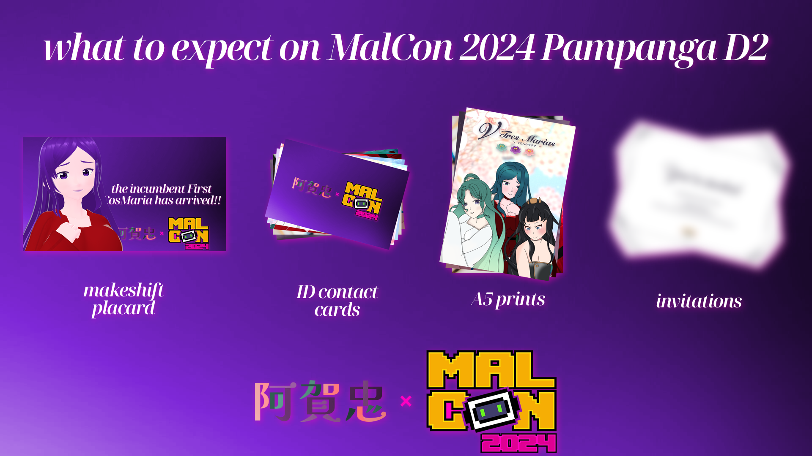
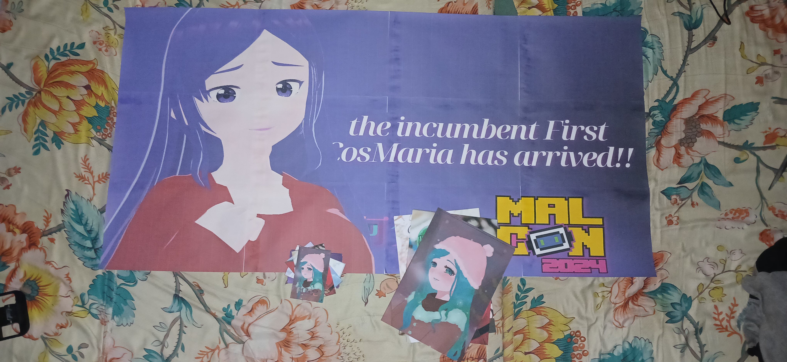
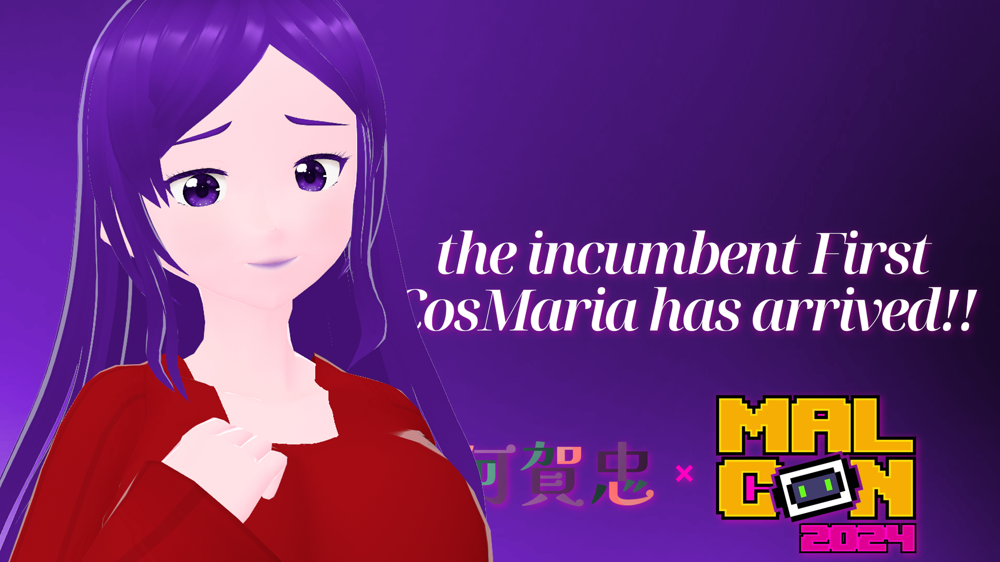
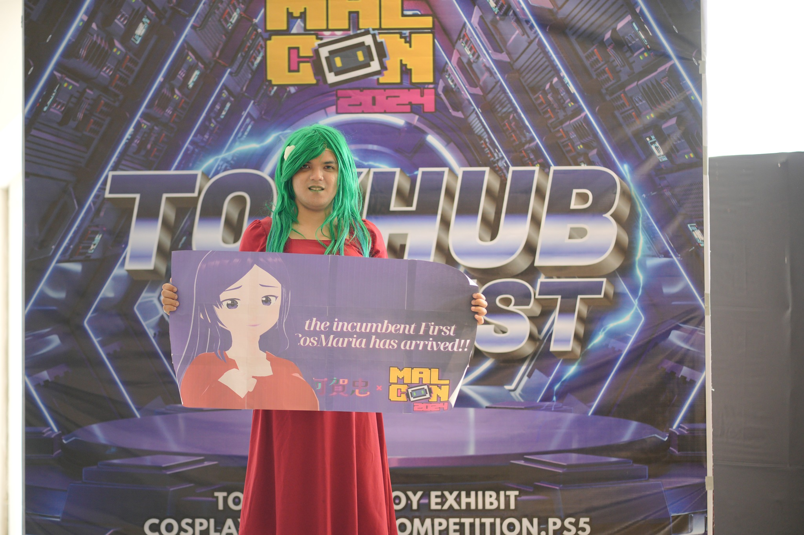

never in my years I would dream that I'd go BEYOND Bataan for my routine cosplays. today is the first time that I get to experience an inter-provincial experience, courtesy of Vista Mall Pampanga through #MalCon2024 Pampanga Leg Day 2!!
as the title suggests, this is the "Round 2" of the MalCon Series to which I'm involved in!! somehow, this brings back memories because the first time I went to MalCon for this series was back at Bataan for their own leg -- which I attended for a day and half (I went to D2 at 5pm PHT, then somewhat fully on D3). in addition, since my line of professional work is around Pampanga, I thought I could use that as the next base for my cosplay ops going forward.
now you may be asking: why Pampanga, and why don't you go back to Bataan for cosplays? primary reason is that I'll return to Bataan every two weeks (unless it's urgent business), and primary locations (more specifically malls) were easily accessible through public transport since they run on a single route for most cases. one primary example is that I toured around Laus Group (the headquarters of CLTV36) one night after work. I usually see the building whenever I pass by it on my way to Metro Manila and back, so seeing it up close feels like a dream come true!!
while on a stroll on a nice warm evening. finally get to see the hq for real.😌 (I always dreamed of going near #CLTV36...
Posted by Aga-chuu on Thursday, October 3, 2024
in a nutshell, nothing much; except a few things: updated placard, introduction of ID cards, and an invitation to the mix -- among other things!! let's take a look at some of these:

here they are in physical form!!

for some reason, I was about to reuse the old placard which I first debuted during MalCon 2024 Bataan Leg, but then this happend.
it's gone. pic.twitter.com/yEQI7QHvpt
— 💚🍃Aga-chuu💗🌸 VWriter (@thebelovedmoon) October 10, 2024
in a nutshell, I was about to open vtm_widescreen.psd cuz I need
to update a few things, but the external HDD where it was located decided to
disconnect on its own and it errored out along with Photoshop. when I tried to
reopen the file, it was corrupted -- prompting me to restart. surprise,
surprise; the file has inevitably ceased from existence, and the tempfiles
didn't help even a single bit.
despite the disappointment, however, I was able to recreate the placard; however, everything else is lost to time. I could reiterate the lost ones through images when they were submitted, however, they may take some time.
in any case, it got a lil update following the recreation!! check out the graphic below:

immediately as I summon the placard, some people turned their heads -- with the most being MalCon organizers; with the emcee acknowledging my presence back in Bataan!! I guess we've come full circle again after like the last time uhuhu
 — cred. Berlyndg for MalCon 2024
before I depart from the event, I immediately had to make it extra special by SIGNING the placard -- smth that also happend during the Gakuen-Sai Special, but unfortunately it got lost in transit on the way home. I felt kinda devastated cuz it had been with me when I disembark on multiple PUJs, but I still have an ace up my sleeve: I'll be reprinting them again for the sake of archiving, but lacking the autograph. (luckily the autographs were saved on different cos cards, in which I'll be showing later.)
you may have noticed that whilst the A5 prints stayed the same, the minicards (last featured on the Gakuen-Sai Special) were shrunk to ID cards!! the main reason behind it is that it allows me to have more space for the other cards to be printed alongside, reducing the printing load any printer will take. in addition, since they are going to be cut when it's all done, we have an option to cut them all at once!!
and of course, the paper that was used for these also have changed: whilst photo paper is what I used since I first introduced them during the Bataan Leg, I realized that it may not be practical in the long run due to the nature of which prints were maintained on paper. so with the Pampanga Leg, I opted for a watermarked laid paper; which significantly helped as it also means that whatever prints made will be sure that it stays there -- tho I might need some time before I can draw a conclusion to that sort.
since we're still on the topic of cards, atleast for the ID cards, autographing them is a lil difficult cuz you need to leave a space for the autograph. so I decided that ID cards will be autographed from behind. A5 prints is as-is as with the previous cons.
it'll be ways off until the first-ever major event "Inauguration of the CosMarias" takes place, but it's better to be ready than not!! as part of the word-of-mouth approach, I've decided to craft a design that will fit the invitational, welcoming everyone to the party!!
later on in the article, we'll be discussing what will be the details of the event; alongside who will be attending the event, and which area of the venue will be used to accommodate the said event.
are you curious about more content other than the one mentioned here?? look no further -- I've compiled all of em (including past cosplays I did) in a unified G Drive folder!! each cosplays are grouped into folders named in YYYYMMDD dateformat -- with the first attempt (and my debut as a cosplayer) being 20231230!!
you can check em out by clicking the button below:
absolutely!! you're all set to check out some of the photos I've taken and the cosplays I did -- granted that you'll be using them with intent of goodwill. everyone deserves to treat each other with positivity, and it's the First Maria🍃's job to ensure that it stays that way!!
anyway, be sure to credit me aswell if you're planning on using em!! you can use the following included in the below blockquote:
photo taken for/by Aga, the incumbent First CosMaria
check out her other ventures at https://bit.ly/AgaCosplay
if you're also planning on posting my cosplays, use the hashtag #AgaCosplay on your socials so that I can check it out in my spare time!! you can also send me the URL to your post assuming you posted em on my email at jelsa14018@gmail.com.
went through the article but still didn't understand anything? here's a quick summary to get you up to speed:
text
until the next blogpost!! 💚🍃Aga-chuu loves you uwu💗🌸
published